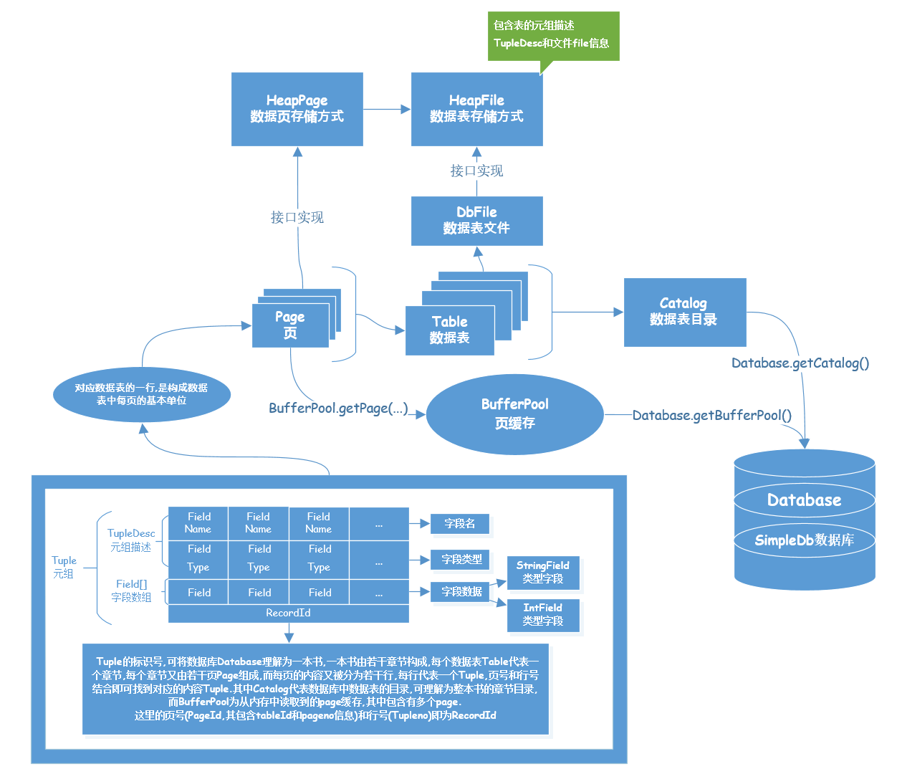
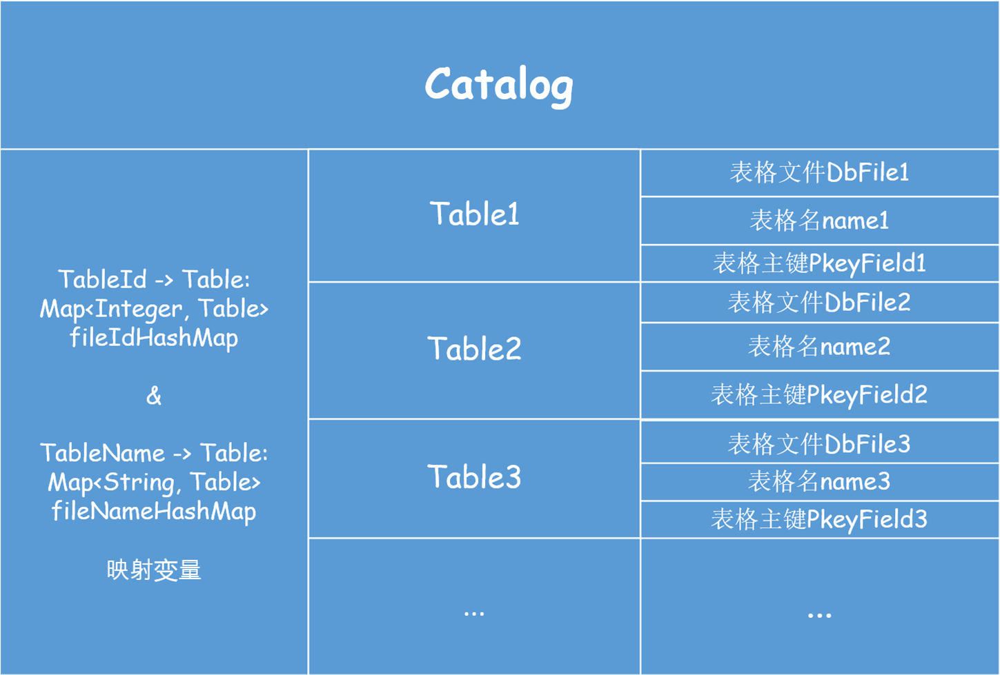

Mit6.830---SimpleDB Lab1笔记
一. Lab1整体实现框架梳理
1. Tuple 和 TupleDesc的关系及作用
Tuple在这里是元组的意思,作为数据表的一行,包含TupleDesc和字段数据数组.
TupleDesc是元组描述,包含字段类型数组和字段名称数组.

2. Catalog 的作用
数据库
Database是由多张数据表构成的,这时要区分各个数据表而设计了Catalog作为数据表的总目录.这里我们还要设计内部类
Table作为Catalog中的存储单位,包含DbFile和表格名称以及表格主键作为成员变量.那么,
Catalog中如何设计Table的存储方式呢?这里我们可以使用映射的方式来存储,键值可以设计为
int TableId,值则设计为Table.那么这里的
TableId如何获取呢?我们可以查看接口文件
src\java\simpledb\storage\DbFile.java,其中就有相关方法DbFile.getId(),这要等我们实现了HeapFile类中的该方法,就可以体会其中的作用了.

3. BufferPool 的作用
一张数据表Table是由多个Page组成的,而数据表是由文件的形式存在于硬盘中,因此想要获取到表格信息,则必须从硬盘中读取数据表信息到内存中,而这个读取单位则是Page,
BufferPool正是为了缓存Page而存在的.Lab1中要实现
BufferPool.getPage(...)这一成员方法,而这一操作的实现要涉及到文件的读取操作,以pageSize为实际读取单位,并将读取到的Page添加到映射变量中.

4. 关于HeapFile, HeapPage 和 HeapPageId, 以及RecordId的说明
数据表在硬盘中以文件
DbFile类的形式存储,HeapFile是其中的一种文件存储形式,也是DbFile接口的一种实现.
HeapPage是构成HeapFile的单位,既然HeapFile作为数据表在硬盘中的一种存储形式,多个HeapPage则作为数据表在内存中的存储形式.该类包含有HeapPageId,header(用于判断对应内存槽中包含的元组内容是否有效),和Tuple[]元组数组,以及TupleDesc元组描述等成员变量.
HeapPageId是HeapPage的标识符,也是PageId接口的实现类,包含该页所属表格的表格号int TableId和所处表格中的页号int pgNo.

二. Lab1实验过程
Exercise 1.
Implement the skeleton methods in:
- src/java/simpledb/storage/TupleDesc.java
- src/java/simpledb/storage/Tuple.java
参考上述图示结构,实验代码如下:
src/java/simpledb/storage/TupleDesc.java
xxxxxxxxxxpackage simpledb.storage;
import simpledb.common.Type;
import java.io.Serializable;import java.util.*;
/** * TupleDesc describes the schema of a tuple. * */public class TupleDesc implements Serializable {
/** * A help class to facilitate organizing the information of each field * * */ public static class TDItem implements Serializable {
private static final long serialVersionUID = 1L;
/** * The type of the field * */ public final Type fieldType;
/** * The name of the field * */ public final String fieldName;
public TDItem(Type t, String n) { this.fieldName = n; this.fieldType = t; }
public String toString() { return fieldName + "(" + fieldType + ")"; } } private TDItem [] tdItems;
/** * @return * An iterator which iterates over all the field TDItems * that are included in this TupleDesc * * */ public Iterator<TDItem> iterator() { // some code goes here return (Iterator<TDItem>) Arrays.asList(tdItems).iterator(); }
private static final long serialVersionUID = 1L;
/** * Create a new TupleDesc with typeAr.length fields with fields of the * specified types, with associated named fields. * * @param typeAr * array specifying the number of and types of fields in this * TupleDesc. It must contain at least one entry. * * @param fieldAr * array specifying the names of the fields. Note that names may * be null. * */ public TupleDesc(Type[] typeAr, String[] fieldAr) { // some code goes here this.tdItems = new TDItem[typeAr.length]; for(int i = 0; i < typeAr.length; i++) { this.tdItems[i] = new TDItem(typeAr[i], fieldAr[i]); } }
/** * Constructor. Create a new tuple desc with typeAr.length fields with * fields of the specified types, with anonymous (unnamed) fields. * * @param typeAr * array specifying the number of and types of fields in this * TupleDesc. It must contain at least one entry. */ public TupleDesc(Type[] typeAr) { // some code goes here this.tdItems = new TDItem[typeAr.length]; for(int i = 0; i < typeAr.length; i++) { this.tdItems[i] = new TDItem(typeAr[i], null); } }
/** * @return the number of fields in this TupleDesc */ public int numFields() { // some code goes here return this.tdItems.length; }
/** * Gets the (possibly null) field name of the ith field of this TupleDesc. * * @param i * index of the field name to return. It must be a valid index. * @return the name of the ith field * @throws NoSuchElementException * if i is not a valid field reference. */ public String getFieldName(int i) throws NoSuchElementException { // some code goes here if(i >= 0 && i < this.numFields()) { return this.tdItems[i].fieldName; } else { throw new NoSuchElementException(); } }
/** * Gets the type of the ith field of this TupleDesc. * * @param i * The index of the field to get the type of. It must be a valid * index. * @return the type of the ith field * @throws NoSuchElementException * if i is not a valid field reference. */ public Type getFieldType(int i) throws NoSuchElementException { // some code goes here if(i >= 0 && i < this.numFields()) { return this.tdItems[i].fieldType; } else { throw new NoSuchElementException(); } }
/** * Find the index of the field with a given name. * * @param name * name of the field. * @return the index of the field that is first to have the given name. * @throws NoSuchElementException * if no field with a matching name is found. */ public int fieldNameToIndex(String name) throws NoSuchElementException { // some code goes here for(int i = 0; i < this.numFields(); i++) { if(this.tdItems[i].fieldName != null && name !=null && this.tdItems[i].fieldName.equals(name)) { return i; } else if(this.tdItems[i].fieldName == null && name ==null) { return i; } } throw new NoSuchElementException(); }
/** * @return The size (in bytes) of tuples corresponding to this TupleDesc. * Note that tuples from a given TupleDesc are of a fixed size. * */ public int getSize() { // some code goes here int size = 0; for(TDItem item : this.tdItems) { size = size + item.fieldType.getLen(); } return size; }
/** * Merge two TupleDescs into one, with td1.numFields + td2.numFields fields, * with the first td1.numFields coming from td1 and the remaining from td2. * * @param td1 * The TupleDesc with the first fields of the new TupleDesc * @param td2 * The TupleDesc with the last fields of the TupleDesc * @return the new TupleDesc */ public static TupleDesc merge(TupleDesc td1, TupleDesc td2) { // some code goes here Type[] types = new Type[td1.numFields() + td2.numFields()]; String[] names = new String[td1.numFields() + td2.numFields()]; for(int i = 0; i < td1.numFields(); i++) { types[i] = td1.getFieldType(i); names[i] = td1.getFieldName(i); } for(int i = td1.numFields(); i < td1.numFields() + td2.numFields(); i++) { types[i] = td2.getFieldType(i - td1.numFields()); names[i] = td2.getFieldName(i - td1.numFields()); } TupleDesc td = new TupleDesc(types, names); return td; }
/** * Compares the specified object with this TupleDesc for equality. Two * TupleDescs are considered equal if they have the same number of items * and if the i-th type in this TupleDesc is equal to the i-th type in o * for every i. * * @param o * the Object to be compared for equality with this TupleDesc. * * @return true if the object is equal to this TupleDesc. */
public boolean equals(Object o) { // some code goes here if(!this.getClass().isInstance(o)) { return false; } TupleDesc temp = (TupleDesc) o; if(temp.numFields() != this.numFields()) { return false; } for(int i = 0; i < this.numFields(); i++) { if(!this.tdItems[i].fieldType.equals(temp.tdItems[i].fieldType)) { return false; } } return true; }
public int hashCode() { // If you want to use TupleDesc as keys for HashMap, implement this so // that equal objects have equals hashCode() results throw new UnsupportedOperationException("unimplemented"); }
/** * Returns a String describing this descriptor. It should be of the form * "fieldType[0](fieldName[0]), ..., fieldType[M](fieldName[M])", although * the exact format does not matter. * * @return String describing this descriptor. */ public String toString() { // some code goes here StringBuffer res = new StringBuffer(); for(int i = 0; i < this.numFields() - 1; i++) { res.append(this.tdItems[i].fieldType.toString()+"("+this.tdItems[i].fieldName+"),"); } res.append(this.tdItems[this.numFields() - 1].fieldType.toString()+"("+this.tdItems[this.numFields() - 1].fieldName+")"); return res.toString(); }}
ant runtest -Dtest=TupleDescTest
xxxxxxxxxxruntest: [junit] Running simpledb.TupleDescTest [junit] Testsuite: simpledb.TupleDescTest [junit] Tests run: 6, Failures: 0, Errors: 0, Skipped: 0, Time elapsed: 0.037 sec [junit] Tests run: 6, Failures: 0, Errors: 0, Skipped: 0, Time elapsed: 0.037 sec [junit] [junit] Testcase: getSize took 0.013 sec [junit] Testcase: getType took 0.001 sec [junit] Testcase: numFields took 0 sec [junit] Testcase: combine took 0 sec [junit] Testcase: testEquals took 0.001 sec [junit] Testcase: nameToId took 0.009 sec
BUILD SUCCESSFULTotal time: 2 secondssrc/java/simpledb/storage/Tuple.java
xxxxxxxxxxpackage simpledb.storage;
import java.io.Serializable;import java.util.Arrays;import java.util.Iterator;
/** * Tuple maintains information about the contents of a tuple. Tuples have a * specified schema specified by a TupleDesc object and contain Field objects * with the data for each field. */public class Tuple implements Serializable {
private static final long serialVersionUID = 1L; private TupleDesc tupleDesc; private RecordId recordId; private Field[] fields; /** * Create a new tuple with the specified schema (type). * * @param td * the schema of this tuple. It must be a valid TupleDesc * instance with at least one field. */ public Tuple(TupleDesc td) { // some code goes here this.tupleDesc = td; this.fields = new Field[td.numFields()]; }
/** * @return The TupleDesc representing the schema of this tuple. */ public TupleDesc getTupleDesc() { // some code goes here return this.tupleDesc; }
/** * @return The RecordId representing the location of this tuple on disk. May * be null. */ public RecordId getRecordId() { // some code goes here
return this.recordId; }
/** * Set the RecordId information for this tuple. * * @param rid * the new RecordId for this tuple. */ public void setRecordId(RecordId rid) { // some code goes here this.recordId = rid; }
/** * Change the value of the ith field of this tuple. * * @param i * index of the field to change. It must be a valid index. * @param f * new value for the field. */ public void setField(int i, Field f) { // some code goes here this.fields[i] = f; }
/** * @return the value of the ith field, or null if it has not been set. * * @param i * field index to return. Must be a valid index. */ public Field getField(int i) { // some code goes here return fields[i]; }
/** * Returns the contents of this Tuple as a string. Note that to pass the * system tests, the format needs to be as follows: * * column1\tcolumn2\tcolumn3\t...\tcolumnN * * where \t is any whitespace (except a newline) */ public String toString() { // some code goes here StringBuffer res = new StringBuffer(); for(int i = 0; i < this.tupleDesc.numFields() - 1; i++) { res.append(this.fields[i].toString() + " "); } res.append(this.fields[this.tupleDesc.numFields() - 1].toString()); return res.toString(); // throw new UnsupportedOperationException("Implement this"); }
/** * @return * An iterator which iterates over all the fields of this tuple * */ public Iterator<Field> fields() { // some code goes here return Arrays.asList(this.fields).iterator(); }
/** * reset the TupleDesc of this tuple (only affecting the TupleDesc) * */ public void resetTupleDesc(TupleDesc td) { // some code goes here this.tupleDesc = td; }}
ant runtest -Dtest=TupleTest
这里的TestCase: modifyRecordId报错是正常的.
原文: At this point, your code should pass the unit tests TupleTest and TupleDescTest. At this point, modifyRecordId() should fail because you havn't implemented it yet.
xxxxxxxxxxruntest: [junit] Running simpledb.TupleTest [junit] Testsuite: simpledb.TupleTest [junit] Tests run: 3, Failures: 0, Errors: 1, Skipped: 0, Time elapsed: 0.026 sec [junit] Tests run: 3, Failures: 0, Errors: 1, Skipped: 0, Time elapsed: 0.026 sec [junit] [junit] Testcase: modifyFields took 0.01 sec [junit] Testcase: getTupleDesc took 0 sec [junit] Testcase: modifyRecordId took 0.002 sec [junit] Caused an ERROR [junit] modifyRecordId() test failed due to RecordId.equals() not being implemented. This is not required for Lab 1, but should pass when you do implement the RecordId class. [junit] java.lang.UnsupportedOperationException: modifyRecordId() test failed due to RecordId.equals() not being implemented. This is not required for Lab 1, but should pass when you do implement the RecordId class. [junit] at simpledb.TupleTest.modifyRecordId(TupleTest.java:54) [junit] BUILD FAILED
Exercise 2.
Implement the skeleton methods in:
- src/java/simpledb/common/Catalog.java
src/java/simpledb/common/Catalog.java
xxxxxxxxxxpackage simpledb.common;
import simpledb.common.Type;import simpledb.storage.DbFile;import simpledb.storage.HeapFile;import simpledb.storage.TupleDesc;
import java.io.BufferedReader;import java.io.File;import java.io.FileReader;import java.io.IOException;import java.util.*;import java.util.concurrent.ConcurrentHashMap;
/** * The Catalog keeps track of all available tables in the database and their * associated schemas. * For now, this is a stub catalog that must be populated with tables by a * user program before it can be used -- eventually, this should be converted * to a catalog that reads a catalog table from disk. * * @Threadsafe */public class Catalog {
private class Table { DbFile dbFile; String name; String pkeyField; public Table(DbFile dbFile, String name, String pkeyField) { this.dbFile = dbFile; this.name = name; this.pkeyField = pkeyField; } } private ConcurrentHashMap<Integer, Table> fileIdHashMap; private ConcurrentHashMap<String, Table> fileNameHashMap; /** * Constructor. * Creates a new, empty catalog. */ public Catalog() { // some code goes here fileIdHashMap = new ConcurrentHashMap<>(); fileNameHashMap = new ConcurrentHashMap<>(); }
/** * Add a new table to the catalog. * This table's contents are stored in the specified DbFile. * @param file the contents of the table to add; file.getId() is the identfier of * this file/tupledesc param for the calls getTupleDesc and getFile * @param name the name of the table -- may be an empty string. May not be null. If a name * conflict exists, use the last table to be added as the table for a given name. * @param pkeyField the name of the primary key field */ public void addTable(DbFile file, String name, String pkeyField) { // some code goes here fileIdHashMap.put(file.getId(), new Table(file, name, pkeyField)); fileNameHashMap.put(name, new Table(file, name, pkeyField)); }
public void addTable(DbFile file, String name) { addTable(file, name, ""); }
// Mit 6.081 OS C // Mit 6.830 SimpleDB Java // Mit 6.824 Distribute System Golang
/** * Add a new table to the catalog. * This table has tuples formatted using the specified TupleDesc and its * contents are stored in the specified DbFile. * @param file the contents of the table to add; file.getId() is the identfier of * this file/tupledesc param for the calls getTupleDesc and getFile */ public void addTable(DbFile file) { addTable(file, (UUID.randomUUID()).toString()); }
/** * Return the id of the table with a specified name, * @throws NoSuchElementException if the table doesn't exist */ public int getTableId(String name) throws NoSuchElementException { // some code goes here Table res; if((res = fileNameHashMap.get(name + "")) != null) { return res.dbFile.getId(); } throw new NoSuchElementException(); }
/** * Returns the tuple descriptor (schema) of the specified table * @param tableid The id of the table, as specified by the DbFile.getId() * function passed to addTable * @throws NoSuchElementException if the table doesn't exist */ public TupleDesc getTupleDesc(int tableid) throws NoSuchElementException { // some code goes here Table res; if((res = fileIdHashMap.get(tableid)) != null) { return res.dbFile.getTupleDesc(); } throw new NoSuchElementException(); }
/** * Returns the DbFile that can be used to read the contents of the * specified table. * @param tableid The id of the table, as specified by the DbFile.getId() * function passed to addTable */ public DbFile getDatabaseFile(int tableid) throws NoSuchElementException { // some code goes here Table res; if((res = fileIdHashMap.get(tableid)) != null) { return res.dbFile; } throw new NoSuchElementException(); }
public String getPrimaryKey(int tableid) { // some code goes here Table res; if((res = fileIdHashMap.get(tableid)) != null) { return res.pkeyField; } throw new NoSuchElementException(); }
public Iterator<Integer> tableIdIterator() { // some code goes here return fileIdHashMap.keySet().iterator(); }
public String getTableName(int id) { // some code goes here return fileIdHashMap.get(id).name; } /** Delete all tables from the catalog */ public void clear() { // some code goes here fileIdHashMap.clear(); fileNameHashMap.clear(); } /** * Reads the schema from a file and creates the appropriate tables in the database. * @param catalogFile */ public void loadSchema(String catalogFile) { String line = ""; String baseFolder=new File(new File(catalogFile).getAbsolutePath()).getParent(); try { BufferedReader br = new BufferedReader(new FileReader(catalogFile)); while ((line = br.readLine()) != null) { //assume line is of the format name (field type, field type, ...) String name = line.substring(0, line.indexOf("(")).trim(); //System.out.println("TABLE NAME: " + name); String fields = line.substring(line.indexOf("(") + 1, line.indexOf(")")).trim(); String[] els = fields.split(","); ArrayList<String> names = new ArrayList<>(); ArrayList<Type> types = new ArrayList<>(); String primaryKey = ""; for (String e : els) { String[] els2 = e.trim().split(" "); names.add(els2[0].trim()); if (els2[1].trim().equalsIgnoreCase("int")) types.add(Type.INT_TYPE); else if (els2[1].trim().equalsIgnoreCase("string")) types.add(Type.STRING_TYPE); else { System.out.println("Unknown type " + els2[1]); System.exit(0); } if (els2.length == 3) { if (els2[2].trim().equals("pk")) primaryKey = els2[0].trim(); else { System.out.println("Unknown annotation " + els2[2]); System.exit(0); } } } Type[] typeAr = types.toArray(new Type[0]); String[] namesAr = names.toArray(new String[0]); TupleDesc t = new TupleDesc(typeAr, namesAr); HeapFile tabHf = new HeapFile(new File(baseFolder+"/"+name + ".dat"), t); addTable(tabHf,name,primaryKey); System.out.println("Added table : " + name + " with schema " + t); } } catch (IOException e) { e.printStackTrace(); System.exit(0); } catch (IndexOutOfBoundsException e) { System.out.println ("Invalid catalog entry : " + line); System.exit(0); } }}
ant runtest -Dtest=CatalogTest
xxxxxxxxxxruntest: [junit] Running simpledb.CatalogTest [junit] Testsuite: simpledb.CatalogTest [junit] Tests run: 5, Failures: 0, Errors: 0, Skipped: 0, Time elapsed: 0.023 sec [junit] Tests run: 5, Failures: 0, Errors: 0, Skipped: 0, Time elapsed: 0.023 sec [junit] [junit] Testcase: getTupleDesc took 0.012 sec [junit] Testcase: getTableId took 0 sec [junit] Testcase: handleDuplicateIds took 0 sec [junit] Testcase: getDatabaseFile took 0 sec [junit] Testcase: handleDuplicateNames took 0.001 sec
BUILD SUCCESSFULTotal time: 1 second
Exercise 3.
Implement the getPage() method in:
- src/java/simpledb/storage/BufferPool.java
src/java/simpledb/storage/BufferPool.java
注意:
Buffer Pool.getPage()中DbFile.readPage(PageId pid)只能使用一次,也就是说最好定义一个Page变量暂存读取到的数据页信息,进行添加操作后再返回该变量.
如果这里不使用变量暂存,返回时又要使用一次DbFile.readPage(PageId pid)方法,虽然得到的值是相同的,但是在Exercise6时会出现数据页读取次数过多的Bug,本人就是找了很久才发现的这一问题,也说明函数使用要更加谨慎才好.
xxxxxxxxxxpackage simpledb.storage;
import simpledb.common.Database;import simpledb.common.Permissions;import simpledb.common.DbException;import simpledb.common.DeadlockException;import simpledb.transaction.TransactionAbortedException;import simpledb.transaction.TransactionId;
import java.io.*;
import java.util.concurrent.ConcurrentHashMap;
/** * BufferPool manages the reading and writing of pages into memory from * disk. Access methods call into it to retrieve pages, and it fetches * pages from the appropriate location. * <p> * The BufferPool is also responsible for locking; when a transaction fetches * a page, BufferPool checks that the transaction has the appropriate * locks to read/write the page. * * @Threadsafe, all fields are final */public class BufferPool { /** Bytes per page, including header. */ private static final int DEFAULT_PAGE_SIZE = 4096;
private static int pageSize = DEFAULT_PAGE_SIZE; /** Default number of pages passed to the constructor. This is used by other classes. BufferPool should use the numPages argument to the constructor instead. */ public static final int DEFAULT_PAGES = 50; private int numPages; // key ==> pageId value ==> page private ConcurrentHashMap<Integer, Page> pagesMap; /** * Creates a BufferPool that caches up to numPages pages. * * @param numPages maximum number of pages in this buffer pool. */ public BufferPool(int numPages) { // some code goes here this.numPages = numPages; pagesMap = new ConcurrentHashMap<>(); } public static int getPageSize() { return pageSize; } // THIS FUNCTION SHOULD ONLY BE USED FOR TESTING!! public static void setPageSize(int pageSize) { BufferPool.pageSize = pageSize; } // THIS FUNCTION SHOULD ONLY BE USED FOR TESTING!! public static void resetPageSize() { BufferPool.pageSize = DEFAULT_PAGE_SIZE; }
/** * Retrieve the specified page with the associated permissions. * Will acquire a lock and may block if that lock is held by another * transaction. * <p> * The retrieved page should be looked up in the buffer pool. If it * is present, it should be returned. If it is not present, it should * be added to the buffer pool and returned. If there is insufficient * space in the buffer pool, a page should be evicted and the new page * should be added in its place. * * @param tid the ID of the transaction requesting the page * @param pid the ID of the requested page * @param perm the requested permissions on the page */ public Page getPage(TransactionId tid, PageId pid, Permissions perm) throws TransactionAbortedException, DbException { // some code goes here if(! pagesMap.containsKey(pid.hashCode())) { // evict page then add page if(pagesMap.size() >= this.numPages) { evictPage(); } // add page /** * Catalog == through tableId of the one in related dbFile ==> DatabaseFile * DatabaseFile == through pageId of the one in related dbFile ==> Page */ DbFile dbFile = Database.getCatalog().getDatabaseFile(pid.getTableId()); // !!! readPage only once !!! Page page = dbFile.readPage(pid); pagesMap.put(pid.hashCode(), page); return page; } return pagesMap.get(pid.hashCode()); }
/** * Releases the lock on a page. * Calling this is very risky, and may result in wrong behavior. Think hard * about who needs to call this and why, and why they can run the risk of * calling it. * * @param tid the ID of the transaction requesting the unlock * @param pid the ID of the page to unlock */ public void unsafeReleasePage(TransactionId tid, PageId pid) { // some code goes here // not necessary for lab1|lab2 }
/** * Release all locks associated with a given transaction. * * @param tid the ID of the transaction requesting the unlock */ public void transactionComplete(TransactionId tid) { // some code goes here // not necessary for lab1|lab2 }
/** Return true if the specified transaction has a lock on the specified page */ public boolean holdsLock(TransactionId tid, PageId p) { // some code goes here // not necessary for lab1|lab2 return false; }
/** * Commit or abort a given transaction; release all locks associated to * the transaction. * * @param tid the ID of the transaction requesting the unlock * @param commit a flag indicating whether we should commit or abort */ public void transactionComplete(TransactionId tid, boolean commit) { // some code goes here // not necessary for lab1|lab2 }
/** * Add a tuple to the specified table on behalf of transaction tid. Will * acquire a write lock on the page the tuple is added to and any other * pages that are updated (Lock acquisition is not needed for lab2). * May block if the lock(s) cannot be acquired. * * Marks any pages that were dirtied by the operation as dirty by calling * their markDirty bit, and adds versions of any pages that have * been dirtied to the cache (replacing any existing versions of those pages) so * that future requests see up-to-date pages. * * @param tid the transaction adding the tuple * @param tableId the table to add the tuple to * @param t the tuple to add */ public void insertTuple(TransactionId tid, int tableId, Tuple t) throws DbException, IOException, TransactionAbortedException { // some code goes here // not necessary for lab1 }
/** * Remove the specified tuple from the buffer pool. * Will acquire a write lock on the page the tuple is removed from and any * other pages that are updated. May block if the lock(s) cannot be acquired. * * Marks any pages that were dirtied by the operation as dirty by calling * their markDirty bit, and adds versions of any pages that have * been dirtied to the cache (replacing any existing versions of those pages) so * that future requests see up-to-date pages. * * @param tid the transaction deleting the tuple. * @param t the tuple to delete */ public void deleteTuple(TransactionId tid, Tuple t) throws DbException, IOException, TransactionAbortedException { // some code goes here // not necessary for lab1 }
/** * Flush all dirty pages to disk. * NB: Be careful using this routine -- it writes dirty data to disk so will * break simpledb if running in NO STEAL mode. */ public synchronized void flushAllPages() throws IOException { // some code goes here // not necessary for lab1
}
/** Remove the specific page id from the buffer pool. Needed by the recovery manager to ensure that the buffer pool doesn't keep a rolled back page in its cache. Also used by B+ tree files to ensure that deleted pages are removed from the cache so they can be reused safely */ public synchronized void discardPage(PageId pid) { // some code goes here // not necessary for lab1 }
/** * Flushes a certain page to disk * @param pid an ID indicating the page to flush */ private synchronized void flushPage(PageId pid) throws IOException { // some code goes here // not necessary for lab1 }
/** Write all pages of the specified transaction to disk. */ public synchronized void flushPages(TransactionId tid) throws IOException { // some code goes here // not necessary for lab1|lab2 }
/** * Discards a page from the buffer pool. * Flushes the page to disk to ensure dirty pages are updated on disk. */ private synchronized void evictPage() throws DbException { // some code goes here // not necessary for lab1 }
}
Exercise 4.
Implement the skeleton methods in:
- src/java/simpledb/storage/HeapPageId.java
- src/java/simpledb/storage/RecordId.java
- src/java/simpledb/storage/HeapPage.java
src/java/simpledb/storage/HeapPageId.java
注意:
在HeapPageId.hashCode()中的String res = "" + String.valueOf(this.pgNo) + String.valueOf(this.tableId);这一句要连接上""就是为了避免后两个值为null的情况下,无法求出哈希值的问题.
xxxxxxxxxxpackage simpledb.storage;
/** Unique identifier for HeapPage objects. */public class HeapPageId implements PageId {
private int tableId; private int pgNo; /** * Constructor. Create a page id structure for a specific page of a * specific table. * * @param tableId The table that is being referenced * @param pgNo The page number in that table. */ public HeapPageId(int tableId, int pgNo) { // some code goes here this.tableId = tableId; this.pgNo = pgNo; }
/** @return the table associated with this PageId */ public int getTableId() { // some code goes here return this.tableId; }
/** * @return the page number in the table getTableId() associated with * this PageId */ public int getPageNumber() { // some code goes here return this.pgNo; }
/** * @return a hash code for this page, represented by a combination of * the table number and the page number (needed if a PageId is used as a * key in a hash table in the BufferPool, for example.) * @see BufferPool */ public int hashCode() { // some code goes here // throw new UnsupportedOperationException("implement this"); // avoid the exception of "res = null" String res = "" + String.valueOf(this.pgNo) + String.valueOf(this.tableId); return res.hashCode(); }
/** * Compares one PageId to another. * * @param o The object to compare against (must be a PageId) * @return true if the objects are equal (e.g., page numbers and table * ids are the same) */ public boolean equals(Object o) { // some code goes here if(o instanceof HeapPageId) { PageId temp = (PageId)o; if(this.tableId == temp.getTableId() && this.pgNo == temp.getPageNumber()) { return true; } } return false; }
/** * Return a representation of this object as an array of * integers, for writing to disk. Size of returned array must contain * number of integers that corresponds to number of args to one of the * constructors. */ public int[] serialize() { int[] data = new int[2];
data[0] = getTableId(); data[1] = getPageNumber();
return data; }
}
ant runtest -Dtest=HeapPageIdTest
xxxxxxxxxxruntest: [junit] Running simpledb.HeapPageIdTest [junit] Testsuite: simpledb.HeapPageIdTest [junit] Tests run: 4, Failures: 0, Errors: 0, Skipped: 0, Time elapsed: 0.017 sec [junit] Tests run: 4, Failures: 0, Errors: 0, Skipped: 0, Time elapsed: 0.017 sec [junit] [junit] Testcase: equals took 0.006 sec [junit] Testcase: pageno took 0 sec [junit] Testcase: getTableId took 0 sec [junit] Testcase: testHashCode took 0 sec
BUILD SUCCESSFULTotal time: 1 secondsrc/java/simpledb/storage/RecordId.java
xxxxxxxxxxpackage simpledb.storage;
import java.io.Serializable;
/** * A RecordId is a reference to a specific tuple on a specific page of a * specific table. */public class RecordId implements Serializable {
private static final long serialVersionUID = 1L; private PageId pageId; private int tupleno; /** * Creates a new RecordId referring to the specified PageId and tuple * number. * * @param pid * the pageid of the page on which the tuple resides * @param tupleno * the tuple number within the page. */ public RecordId(PageId pid, int tupleno) { // some code goes here this.pageId = pid; this.tupleno = tupleno; }
/** * @return the tuple number this RecordId references. */ public int getTupleNumber() { // some code goes here return this.tupleno; }
/** * @return the page id this RecordId references. */ public PageId getPageId() { // some code goes here return this.pageId; }
/** * Two RecordId objects are considered equal if they represent the same * tuple. * * @return True if this and o represent the same tuple */ public boolean equals(Object o) { // some code goes here if(o instanceof RecordId) { RecordId temp = (RecordId)o; if(temp.pageId == this.pageId && temp.tupleno == this.tupleno) { return true; } } // throw new UnsupportedOperationException("implement this"); return false; }
/** * You should implement the hashCode() so that two equal RecordId instances * (with respect to equals()) have the same hashCode(). * * @return An int that is the same for equal RecordId objects. */ public int hashCode() { // some code goes here // pageId contains the information of tableId and pgno String res = "" + this.pageId.getTableId() + this.pageId.getPageNumber() + String.valueOf(this.tupleno); // throw new UnsupportedOperationException("implement this"); return res.hashCode(); }
}
ant runtest -Dtest=TupleTest
xxxxxxxxxxruntest: [junit] Running simpledb.TupleTest [junit] Testsuite: simpledb.TupleTest [junit] Tests run: 3, Failures: 0, Errors: 0, Skipped: 0, Time elapsed: 0.022 sec [junit] Tests run: 3, Failures: 0, Errors: 0, Skipped: 0, Time elapsed: 0.022 sec [junit] [junit] Testcase: getTupleDesc took 0.011 sec [junit] Testcase: modifyRecordId took 0.002 sec [junit] Testcase: modifyFields took 0.001 sec
BUILD SUCCESSFULTotal time: 1 secondsrc/java/simpledb/storage/HeapPage.java
这里由BufferPool规定内存中的一个Page的大小为BufferPool.getPageSize()*8,单位为比特,由于BufferPool中的每个Page都由若干的Tuple占据着各自的Slot,然而每个Slot也有着1比特的Header位,所以每个Page中的Slot数量计算方式为:
然后就是判断当前Slot是否有效的问题了,这里的byte[] Header数组是以byte为单位存在的,对于一个Tuple我们仅需要1bit作为判断位即可,那么这里的一个Header就对应8个Slot了,这里我们就使用位操作来判断int headerIndex = i / 8;来求出这个Tuple所属的Header序号,再使用int offset = i % 8;求出在这一字节Header中的偏移量,最后相与&即可得出结果.
xxxxxxxxxxpackage simpledb.storage;
import simpledb.common.Database;import simpledb.common.DbException;import simpledb.common.Debug;import simpledb.common.Catalog;import simpledb.transaction.TransactionId;
import java.util.*;import java.io.*;import java.nio.Buffer;
/** * Each instance of HeapPage stores data for one page of HeapFiles and * implements the Page interface that is used by BufferPool. * * @see HeapFile * @see BufferPool * */public class HeapPage implements Page {
final HeapPageId pid; final TupleDesc td; final byte[] header; final Tuple[] tuples; final int numSlots;
byte[] oldData; private final Byte oldDataLock= (byte) 0;
/** * Create a HeapPage from a set of bytes of data read from disk. * The format of a HeapPage is a set of header bytes indicating * the slots of the page that are in use, some number of tuple slots. * Specifically, the number of tuples is equal to: <p> * floor((BufferPool.getPageSize()*8) / (tuple size * 8 + 1)) * <p> where tuple size is the size of tuples in this * database table, which can be determined via {@link Catalog#getTupleDesc}. * The number of 8-bit header words is equal to: * <p> * ceiling(no. tuple slots / 8) * <p> * @see Database#getCatalog * @see Catalog#getTupleDesc * @see BufferPool#getPageSize() */ public HeapPage(HeapPageId id, byte[] data) throws IOException { this.pid = id; this.td = Database.getCatalog().getTupleDesc(id.getTableId()); this.numSlots = getNumTuples(); DataInputStream dis = new DataInputStream(new ByteArrayInputStream(data));
// allocate and read the header slots of this page header = new byte[getHeaderSize()]; for (int i=0; i<header.length; i++) header[i] = dis.readByte(); tuples = new Tuple[numSlots]; try{ // allocate and read the actual records of this page for (int i=0; i<tuples.length; i++) tuples[i] = readNextTuple(dis,i); }catch(NoSuchElementException e){ e.printStackTrace(); } dis.close();
setBeforeImage(); }
/** Retrieve the number of tuples on this page. @return the number of tuples on this page */ private int getNumTuples() { // some code goes here // BufferPool => Pages size // Tuple => Fields Length Bytes + 1 bit(header to vaildate) => (8 * Fields Length + 1) bits int res = (int)Math.floor(BufferPool.getPageSize() * 8 * 1.0 / (this.td.getSize() * 8 + 1)); return res; }
/** * Computes the number of bytes in the header of a page in a HeapFile with each tuple occupying tupleSize bytes * @return the number of bytes in the header of a page in a HeapFile with each tuple occupying tupleSize bytes */ private int getHeaderSize() { // some code goes here // header in 1 tuple => 1 bit int res = (int)Math.ceil(this.numSlots * 1.0 / 8); return res; } /** Return a view of this page before it was modified -- used by recovery */ public HeapPage getBeforeImage(){ try { byte[] oldDataRef = null; synchronized(oldDataLock) { oldDataRef = oldData; } return new HeapPage(pid,oldDataRef); } catch (IOException e) { e.printStackTrace(); //should never happen -- we parsed it OK before! System.exit(1); } return null; } public void setBeforeImage() { synchronized(oldDataLock) { oldData = getPageData().clone(); } }
/** * @return the PageId associated with this page. */ public HeapPageId getId() { // some code goes here return this.pid; }
/** * Suck up tuples from the source file. */ private Tuple readNextTuple(DataInputStream dis, int slotId) throws NoSuchElementException { // if associated bit is not set, read forward to the next tuple, and // return null. if (!isSlotUsed(slotId)) { for (int i=0; i<td.getSize(); i++) { try { dis.readByte(); } catch (IOException e) { throw new NoSuchElementException("error reading empty tuple"); } } return null; }
// read fields in the tuple Tuple t = new Tuple(td); RecordId rid = new RecordId(pid, slotId); t.setRecordId(rid); try { for (int j=0; j<td.numFields(); j++) { Field f = td.getFieldType(j).parse(dis); t.setField(j, f); } } catch (java.text.ParseException e) { e.printStackTrace(); throw new NoSuchElementException("parsing error!"); }
return t; }
/** * Generates a byte array representing the contents of this page. * Used to serialize this page to disk. * <p> * The invariant here is that it should be possible to pass the byte * array generated by getPageData to the HeapPage constructor and * have it produce an identical HeapPage object. * * @see #HeapPage * @return A byte array correspond to the bytes of this page. */ public byte[] getPageData() { int len = BufferPool.getPageSize(); ByteArrayOutputStream baos = new ByteArrayOutputStream(len); DataOutputStream dos = new DataOutputStream(baos);
// create the header of the page for (byte b : header) { try { dos.writeByte(b); } catch (IOException e) { // this really shouldn't happen e.printStackTrace(); } }
// create the tuples for (int i=0; i<tuples.length; i++) {
// empty slot if (!isSlotUsed(i)) { for (int j=0; j<td.getSize(); j++) { try { dos.writeByte(0); } catch (IOException e) { e.printStackTrace(); }
} continue; }
// non-empty slot for (int j=0; j<td.numFields(); j++) { Field f = tuples[i].getField(j); try { f.serialize(dos); } catch (IOException e) { e.printStackTrace(); } } }
// padding int zerolen = BufferPool.getPageSize() - (header.length + td.getSize() * tuples.length); //- numSlots * td.getSize(); byte[] zeroes = new byte[zerolen]; try { dos.write(zeroes, 0, zerolen); } catch (IOException e) { e.printStackTrace(); }
try { dos.flush(); } catch (IOException e) { e.printStackTrace(); }
return baos.toByteArray(); }
/** * Static method to generate a byte array corresponding to an empty * HeapPage. * Used to add new, empty pages to the file. Passing the results of * this method to the HeapPage constructor will create a HeapPage with * no valid tuples in it. * * @return The returned ByteArray. */ public static byte[] createEmptyPageData() { int len = BufferPool.getPageSize(); return new byte[len]; //all 0 }
/** * Delete the specified tuple from the page; the corresponding header bit should be updated to reflect * that it is no longer stored on any page. * @throws DbException if this tuple is not on this page, or tuple slot is * already empty. * @param t The tuple to delete */ public void deleteTuple(Tuple t) throws DbException { // some code goes here // not necessary for lab1 }
/** * Adds the specified tuple to the page; the tuple should be updated to reflect * that it is now stored on this page. * @throws DbException if the page is full (no empty slots) or tupledesc * is mismatch. * @param t The tuple to add. */ public void insertTuple(Tuple t) throws DbException { // some code goes here // not necessary for lab1 }
/** * Marks this page as dirty/not dirty and record that transaction * that did the dirtying */ public void markDirty(boolean dirty, TransactionId tid) { // some code goes here // not necessary for lab1 }
/** * Returns the tid of the transaction that last dirtied this page, or null if the page is not dirty */ public TransactionId isDirty() { // some code goes here // Not necessary for lab1 return null; }
/** * Returns the number of empty slots on this page. */ public int getNumEmptySlots() { // some code goes here int sum = 0; for(int i = 0; i < this.numSlots; i++) { if(!isSlotUsed(i)) { sum++; } } return sum; }
/** * Returns true if associated slot on this page is filled. */ public boolean isSlotUsed(int i) { // some code goes here int headerIndex = i / 8; int offset = i % 8; if((this.header[headerIndex] & (1 << offset)) != 0) { return true; } return false; }
/** * Abstraction to fill or clear a slot on this page. */ private void markSlotUsed(int i, boolean value) { // some code goes here // not necessary for lab1 }
/** * @return an iterator over all tuples on this page (calling remove on this iterator throws an UnsupportedOperationException) * (note that this iterator shouldn't return tuples in empty slots!) */ public Iterator<Tuple> iterator() { // some code goes here ArrayList<Tuple> filledTuples = new ArrayList<>(); for(int i = 0; i < this.numSlots; i++) { if(isSlotUsed(i)) { filledTuples.add(this.tuples[i]); } } return filledTuples.iterator(); }
}
ant runtest -Dtest=HeapPageReadTest
xxxxxxxxxxruntest: [junit] Running simpledb.HeapPageReadTest [junit] Testsuite: simpledb.HeapPageReadTest [junit] Tests run: 4, Failures: 0, Errors: 0, Skipped: 0, Time elapsed: 0.029 sec [junit] Tests run: 4, Failures: 0, Errors: 0, Skipped: 0, Time elapsed: 0.029 sec [junit] [junit] Testcase: getSlot took 0.015 sec [junit] Testcase: getId took 0.001 sec [junit] Testcase: getNumEmptySlots took 0.001 sec [junit] Testcase: testIterator took 0.001 sec
BUILD SUCCESSFULTotal time: 2 seconds
Exercise 5.
Implement the skeleton methods in:
- src/java/simpledb/storage/HeapFile.java
src/java/simpledb/storage/HeapFile.java
这里的内部类HeapFileIterator,作用就是整合所有属于某一HeapFile的HeapPage的元组迭代器.
xxxxxxxxxxpackage simpledb.storage;
import simpledb.common.Database;import simpledb.common.DbException;import simpledb.common.Debug;import simpledb.common.Permissions;import simpledb.transaction.TransactionAbortedException;import simpledb.transaction.TransactionId;
import java.io.*;import java.nio.Buffer;import java.util.*;
/** * HeapFile is an implementation of a DbFile that stores a collection of tuples * in no particular order. Tuples are stored on pages, each of which is a fixed * size, and the file is simply a collection of those pages. HeapFile works * closely with HeapPage. The format of HeapPages is described in the HeapPage * constructor. * * @see HeapPage#HeapPage * @author Sam Madden */public class HeapFile implements DbFile {
/** * Constructs a heap file backed by the specified file. * * @param f * the file that stores the on-disk backing store for this heap * file. */ File file; TupleDesc tupleDesc; public HeapFile(File f, TupleDesc td) { // some code goes here this.file = f; this.tupleDesc = td; }
/** * Returns the File backing this HeapFile on disk. * * @return the File backing this HeapFile on disk. */ public File getFile() { // some code goes here return this.file; }
/** * Returns an ID uniquely identifying this HeapFile. Implementation note: * you will need to generate this tableid somewhere to ensure that each * HeapFile has a "unique id," and that you always return the same value for * a particular HeapFile. We suggest hashing the absolute file name of the * file underlying the heapfile, i.e. f.getAbsoluteFile().hashCode(). * * @return an ID uniquely identifying this HeapFile. */ public int getId() { // some code goes here // throw new UnsupportedOperationException("implement this"); return this.file.getAbsoluteFile().hashCode(); }
/** * Returns the TupleDesc of the table stored in this DbFile. * * @return TupleDesc of this DbFile. */ public TupleDesc getTupleDesc() { // some code goes here // throw new UnsupportedOperationException("implement this"); return this.tupleDesc; }
// see DbFile.java for javadocs public Page readPage(PageId pid) { // some code goes here int tableId = pid.getTableId(); int pgNo = pid.getPageNumber(); try{ RandomAccessFile f = new RandomAccessFile(this.file, "r"); try{ // pages size <= file content length if((pgNo + 1) * BufferPool.getPageSize() <= f.length()) { // move to the specified page position f.seek(pgNo * BufferPool.getPageSize()); byte[] bytes = new byte[BufferPool.getPageSize()]; // read page content if(f.read(bytes, 0, BufferPool.getPageSize()) == BufferPool.getPageSize()) { HeapPageId heapPageId = new HeapPageId(tableId, pgNo); f.close(); return new HeapPage(heapPageId, bytes); } } else { f.close(); } } catch(IOException e) { e.printStackTrace(); } } catch(FileNotFoundException e) { e.printStackTrace(); } throw new IllegalArgumentException(); }
// see DbFile.java for javadocs public void writePage(Page page) throws IOException { // some code goes here // not necessary for lab1 }
/** * Returns the number of pages in this HeapFile. */ public int numPages() { // some code goes here return (int)Math.floor(1.0 * this.file.length() / BufferPool.getPageSize()); }
// see DbFile.java for javadocs public List<Page> insertTuple(TransactionId tid, Tuple t) throws DbException, IOException, TransactionAbortedException { // some code goes here return null; // not necessary for lab1 }
// see DbFile.java for javadocs public ArrayList<Page> deleteTuple(TransactionId tid, Tuple t) throws DbException, TransactionAbortedException { // some code goes here return null; // not necessary for lab1 }
private class HeapFileIterator implements DbFileIterator {
private Iterator<Tuple> tuplesIterator; private final TransactionId transactionId; private final HeapFile heapFile;
public HeapFileIterator(HeapFile heapFile, TransactionId transactionId) { this.heapFile = heapFile; this.transactionId = transactionId; ArrayList<Tuple> tuplesList = new ArrayList<>(); for(int i = 0; i < this.heapFile.numPages() - 1; i++) { try { HeapPage heapPage = (HeapPage)Database.getBufferPool().getPage(this.transactionId, new HeapPageId(heapFile.getId(),i), Permissions.READ_ONLY); Iterator<Tuple> temp = heapPage.iterator(); // integration all the heapPage.iterator() of the heapFile while(temp.hasNext()) { tuplesList.add(temp.next()); } } catch (Exception e) { //TODO: handle exception e.printStackTrace(); } } this.tuplesIterator = tuplesList.iterator(); } public void close() { // TODO Auto-generated method stub tuplesIterator = null; }
public boolean hasNext() throws DbException, TransactionAbortedException { // TODO Auto-generated method stub if(tuplesIterator == null || !tuplesIterator.hasNext()) { return false; } return true; }
public Tuple next() throws DbException, TransactionAbortedException, NoSuchElementException { // TODO Auto-generated method stub if(tuplesIterator == null || !tuplesIterator.hasNext()) { throw new NoSuchElementException(); } return tuplesIterator.next(); }
public void open() throws DbException, TransactionAbortedException { // TODO Auto-generated method stub this.tuplesIterator = null; ArrayList<Tuple> tuplesList = new ArrayList<>(); for(int i = 0; i < this.heapFile.numPages();i++) { try { HeapPage heapPage = (HeapPage)Database.getBufferPool().getPage(this.transactionId, new HeapPageId(heapFile.getId(),i), Permissions.READ_ONLY); Iterator<Tuple> temp = heapPage.iterator(); while(temp.hasNext()) { tuplesList.add(temp.next()); } } catch (Exception e) { //TODO: handle exception e.printStackTrace(); } } this.tuplesIterator = tuplesList.iterator(); }
public void rewind() throws DbException, TransactionAbortedException { // TODO Auto-generated method stub close(); open(); } }
// see DbFile.java for javadocs public DbFileIterator iterator(TransactionId tid) { // some code goes here HeapFileIterator heapFileIterator = new HeapFileIterator(this, tid); return heapFileIterator; }
}
ant runtest -Dtest=HeapFileReadTest
xxxxxxxxxxruntest: [junit] Running simpledb.HeapFileReadTest [junit] Testsuite: simpledb.HeapFileReadTest [junit] Tests run: 6, Failures: 0, Errors: 0, Skipped: 0, Time elapsed: 0.253 sec [junit] Tests run: 6, Failures: 0, Errors: 0, Skipped: 0, Time elapsed: 0.253 sec [junit] [junit] Testcase: getTupleDesc took 0.215 sec [junit] Testcase: numPages took 0.002 sec [junit] Testcase: readPage took 0.006 sec [junit] Testcase: getId took 0.004 sec [junit] Testcase: testIteratorBasic took 0.006 sec [junit] Testcase: testIteratorClose took 0.008 sec
BUILD SUCCESSFULTotal time: 1 second
Exercise 6.
Implement the skeleton methods in:
- src/java/simpledb/execution/SeqScan.java
src/java/simpledb/execution/SeqScan.java
这里我们要实现的是对数据库中某个表格的所有数据元组的扫描.
需要注意的是成员方法SeqScan.getTupleDesc(),我们需要对每个字段名称进行修改,即添加前缀${this.tableAlias}..
xxxxxxxxxxpackage simpledb.execution;
import simpledb.common.Database;import simpledb.transaction.TransactionAbortedException;import simpledb.transaction.TransactionId;import simpledb.common.Type;import simpledb.common.DbException;import simpledb.storage.DbFileIterator;import simpledb.storage.Tuple;import simpledb.storage.TupleDesc;
import java.util.*;
/** * SeqScan is an implementation of a sequential scan access method that reads * each tuple of a table in no particular order (e.g., as they are laid out on * disk). */public class SeqScan implements OpIterator {
private static final long serialVersionUID = 1L; private final TransactionId transactionId; private int tableId; private String tableAlias; private DbFileIterator dbFileIterator; /** * Creates a sequential scan over the specified table as a part of the * specified transaction. * * @param tid * The transaction this scan is running as a part of. * @param tableid * the table to scan. * @param tableAlias * the alias of this table (needed by the parser); the returned * tupleDesc should have fields with name tableAlias.fieldName * (note: this class is not responsible for handling a case where * tableAlias or fieldName are null. It shouldn't crash if they * are, but the resulting name can be null.fieldName, * tableAlias.null, or null.null). */ public SeqScan(TransactionId tid, int tableid, String tableAlias) { // some code goes here this.transactionId = tid; this.tableId = tableid; this.tableAlias = tableAlias; this.dbFileIterator = Database.getCatalog().getDatabaseFile(tableid).iterator(tid); }
/** * @return * return the table name of the table the operator scans. This should * be the actual name of the table in the catalog of the database * */ public String getTableName() { return Database.getCatalog().getTableName(this.tableId); }
/** * @return Return the alias of the table this operator scans. * */ public String getAlias() { // some code goes here return this.tableAlias; }
/** * Reset the tableid, and tableAlias of this operator. * @param tableid * the table to scan. * @param tableAlias * the alias of this table (needed by the parser); the returned * tupleDesc should have fields with name tableAlias.fieldName * (note: this class is not responsible for handling a case where * tableAlias or fieldName are null. It shouldn't crash if they * are, but the resulting name can be null.fieldName, * tableAlias.null, or null.null). */ public void reset(int tableid, String tableAlias) { // some code goes here this.tableId = tableid; this.tableAlias = tableAlias; }
public SeqScan(TransactionId tid, int tableId) { this(tid, tableId, Database.getCatalog().getTableName(tableId)); }
public void open() throws DbException, TransactionAbortedException { // some code goes here dbFileIterator.open(); }
/** * Returns the TupleDesc with field names from the underlying HeapFile, * prefixed with the tableAlias string from the constructor. This prefix * becomes useful when joining tables containing a field(s) with the same * name. The alias and name should be separated with a "." character * (e.g., "alias.fieldName"). * * @return the TupleDesc with field names from the underlying HeapFile, * prefixed with the tableAlias string from the constructor. */ public TupleDesc getTupleDesc() { // some code goes here StringBuffer prefixBuffer = new StringBuffer(this.tableAlias + '.'); TupleDesc tempTupleDesc = Database.getCatalog().getTupleDesc(tableId); String[] prefixed_name = new String[tempTupleDesc.numFields()]; Type[] tempTypes = new Type[tempTupleDesc.numFields()]; for(int i = 0; i < tempTupleDesc.numFields(); i++) { prefixed_name[i] = prefixBuffer.toString() + tempTupleDesc.getFieldName(i); tempTypes[i] = tempTupleDesc.getFieldType(i); } TupleDesc res = new TupleDesc(tempTypes, prefixed_name); return res; }
public boolean hasNext() throws TransactionAbortedException, DbException { // some code goes here return dbFileIterator.hasNext(); }
public Tuple next() throws NoSuchElementException, TransactionAbortedException, DbException { // some code goes here return dbFileIterator.next(); }
public void close() { // some code goes here dbFileIterator.close(); }
public void rewind() throws DbException, NoSuchElementException, TransactionAbortedException { // some code goes here dbFileIterator.rewind(); }}
ant runsystest -Dtest=ScanTest
xxxxxxxxxxrunsystest: [junit] Running simpledb.systemtest.ScanTest [junit] Testsuite: simpledb.systemtest.ScanTest [junit] Tests run: 4, Failures: 0, Errors: 0, Skipped: 0, Time elapsed: 0.694 sec [junit] Tests run: 4, Failures: 0, Errors: 0, Skipped: 0, Time elapsed: 0.694 sec [junit] [junit] Testcase: testTupleDesc took 0.235 sec [junit] Testcase: testCache took 0.192 sec [junit] Testcase: testSmall took 0.247 sec [junit] Testcase: testRewind took 0.005 sec
BUILD SUCCESSFULTotal time: 1 second